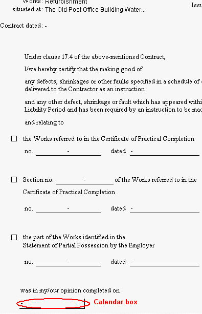
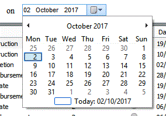

To edit a Completion of Making Good Defects form, select a check box by clicking on with your mouse.
Once a section has been selected, you will be able to choose details from a drop-down list.
To complete the was in my/our opinion completed on field, click on the box and a calendar will open.

Click on the correct date (using the arrows to select a different month) and then close by clicking on the X.
The Form Distribution list may also need editing, which can be accessed by clicking on the Distribution List tab. The user can select/deselect team members for inclusion on the form Transmittal Sheet by clicking on the checkbox in the send column. For more information on how to edit this, see Form Distribution List.
Each form in the active job has an associated Form Distribution list. Each of these are populated from the Global Distribution lists. For more information on this, see Global Distribution List. Please Note: Changes made in the Global Distribution lists will be reflected in the Form Distribution lists of any subsequently added forms.
See also: Issuing a Form Recalling forms Spell Checker Contract Administrator Guidance (helpful advice and information about contract administration and communication)